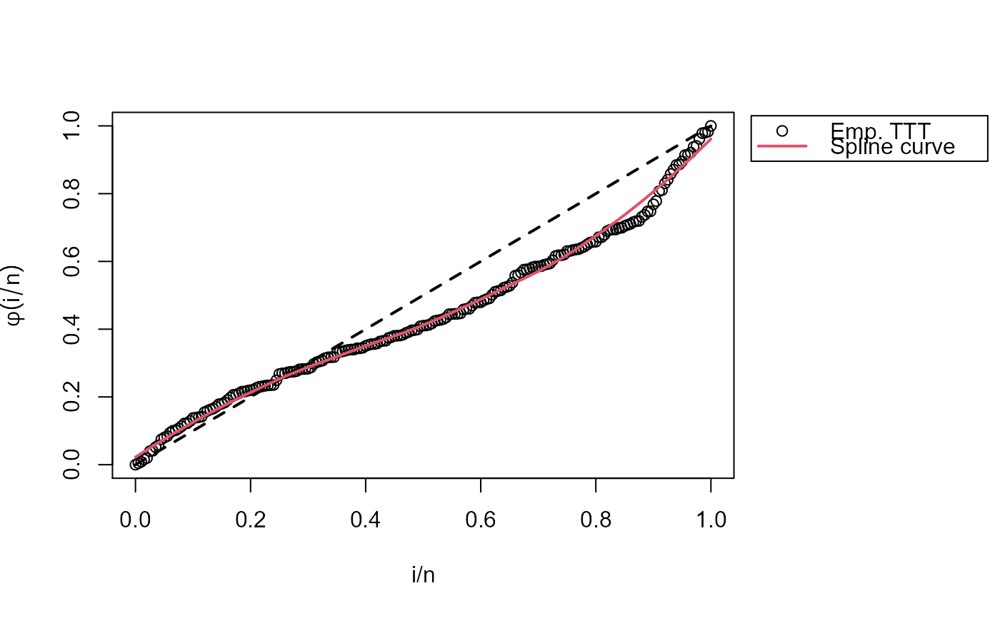

This function can be used to extract initial values found with empirical
time on test transform (TTT) through initValuesOW_TTT function.
This is used for parameter estimation in OW distribution.
param.start(param, initValOW)
Arguments
| param | a character used to specify the parameter required. It can take the
values |
|---|---|
| initValOW | an |
Details
This function just gets initial values computed with initValuesOW_TTT
for OW family. It must be called in sigma.start and nu.start
arguments from gamlss function. This function is useful only
if user want to set start values automatically with TTT plot.
See example for an illustration.
Examples
# Random data generation (OW distributed) y <- rOW(n=200, mu=0.05, sigma=0.6, nu=2) # Initial values with TTT plot library(RelDists) iv <- initValuesOW_TTT(formula = y ~ 1) summary(iv)#> -------------------------------------------------------------------- #> Initial Values #> sigma = 0.6 #> nu = 7 #> -------------------------------------------------------------------- #> Search Regions #> For sigma: all(sigma < 1) #> For nu: all(nu > 1/sigma) #> -------------------------------------------------------------------- #> Hazard shape: Unimodal# Finally, we fit the model library(gamlss) con.out <-gamlss.control(n.cyc = 300, trace = FALSE) con.in <- glim.control(cyc = 500) sigma.start <- param.start("sigma", iv)#> Error in param.start("sigma", iv): no se pudo encontrar la función "param.start"nu.start <- param.start("nu", iv)#> Error in param.start("nu", iv): no se pudo encontrar la función "param.start"mod <- gamlss(y~1, sigma.fo=~1, nu.fo=~1, control=con.out, i.control=con.in, family=myOW_region(OW(sigma.link="identity", nu.link="identity"), valid.values="auto", iv), sigma.start=sigma.start, nu.start=nu.start)#> Error in gamlss(y ~ 1, sigma.fo = ~1, nu.fo = ~1, control = con.out, i.control = con.in, family = myOW_region(OW(sigma.link = "identity", nu.link = "identity"), valid.values = "auto", iv), sigma.start = sigma.start, nu.start = nu.start): objeto 'sigma.start' no encontrado